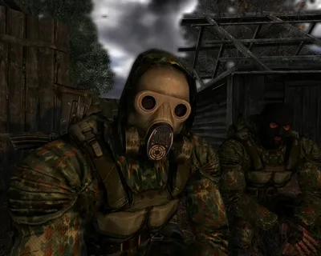
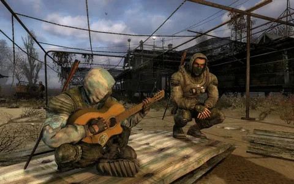
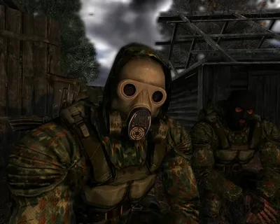
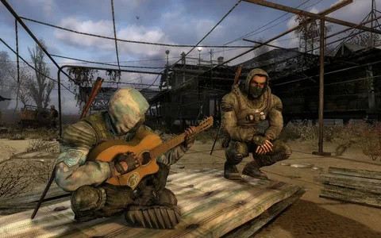
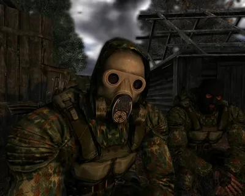
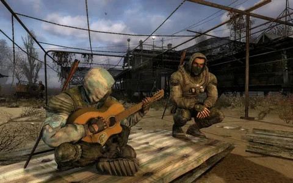

.webp) 



Игрок волен исследовать мир Зоны по своему желанию. Никаких физических или временных ограничений – вы просто отыгрываете роль сталкера, перемещаясь по Зоне, общаясь с другими сталкерами и торговцами, исследуя новые территории, выполняя задания и собирая артефакты. Они могут иметь различный вид, но вы узнаете их сразу же из-за их необычного вида. Некоторые из артефактов видны только в ночное время – но именно тогда наружу из подземелий вылезают самые опасные монстры, которые, к тому же, лучше вас видят в темноте.


Артефакты порождают аномалии из различных органических и неорганических веществ, попавших в зону досягаемости: трава, песок, куски плоти, металл и т.д. Разные типы аномалий порождают разные артефакты и их свойства могут быть как похожи («Душа» и «Колобок» в «S.T.A.L.K.E.R.: Чистое небо»), так и разительно отличаться («Пузырь» и «Ломоть мяса» в «S.T.A.L.K.E.R.: Чистое небо»). Внешний вид у артефактов бывает самый разнообразный: они могут светиться, подпрыгивать, быть прозрачным, обладать цветными ореолами или же не иметь ни одно из этих свойств и просто лежать не земле, как «Колючка». Форма так же редко бывает одинаковой, но размеры, обычно, варьируются в пределах 10-30 сантиметров в диаметре. Некоторые артефакты формируются в течение длительного времени и, порой, бывают найдены в наполовину формировавшемся состоянии, как, например, изменённый штурвал. Существуют артефакты, у которых, в силу тех или иных причин, родительская аномалия неизвестна - например, «Компас» или «Мамины бусы» в «S.T.A.L.K.E.R.: Тень Чернобыля».
Артефакты порождают аномалии из различных органических и неорганических веществ, попавших в зону досягаемости: трава, песок, куски плоти, металл и т.д. Разные типы аномалий порождают разные артефакты и их свойства могут быть как похожи («Душа» и «Колобок» в «S.T.A.L.K.E.R.: Чистое небо»), так и разительно отличаться («Пузырь» и «Ломоть мяса» в «S.T.A.L.K.E.R.: Чистое небо»). Внешний вид у артефактов бывает самый разнообразный: они могут светиться, подпрыгивать, быть прозрачным, обладать цветными ореолами или же не иметь ни одно из этих свойств и просто лежать не земле, как «Колючка». Форма так же редко бывает одинаковой, но размеры, обычно, варьируются в пределах 10-30 сантиметров в диаметре. Некоторые артефакты формируются в течение длительного времени и, порой, бывают найдены в наполовину формировавшемся состоянии, как, например, изменённый штурвал. Существуют артефакты, у которых, в силу тех или иных причин, родительская аномалия неизвестна - например, «Компас» или «Мамины бусы» в «S.T.A.L.K.E.R.: Тень Чернобыля».
Артефакты порождают аномалии из различных органических и неорганических веществ, попавших в зону досягаемости: трава, песок, куски плоти, металл и т.д. Разные типы аномалий порождают разные артефакты и их свойства могут быть как похожи («Душа» и «Колобок» в «S.T.A.L.K.E.R.: Чистое небо»), так и разительно отличаться («Пузырь» и «Ломоть мяса» в «S.T.A.L.K.E.R.: Чистое небо»). Внешний вид у артефактов бывает самый разнообразный: они могут светиться, подпрыгивать, быть прозрачным, обладать цветными ореолами или же не иметь ни одно из этих свойств и просто лежать не земле, как «Колючка». Форма так же редко бывает одинаковой, но размеры, обычно, варьируются в пределах 10-30 сантиметров в диаметре. Некоторые артефакты формируются в течение длительного времени и, порой, бывают найдены в наполовину формировавшемся состоянии, как, например, изменённый штурвал. Существуют артефакты, у которых, в силу тех или иных причин, родительская аномалия неизвестна - например, «Компас» или «Мамины бусы» в «S.T.A.L.K.E.R.: Тень Чернобыля».
helooo